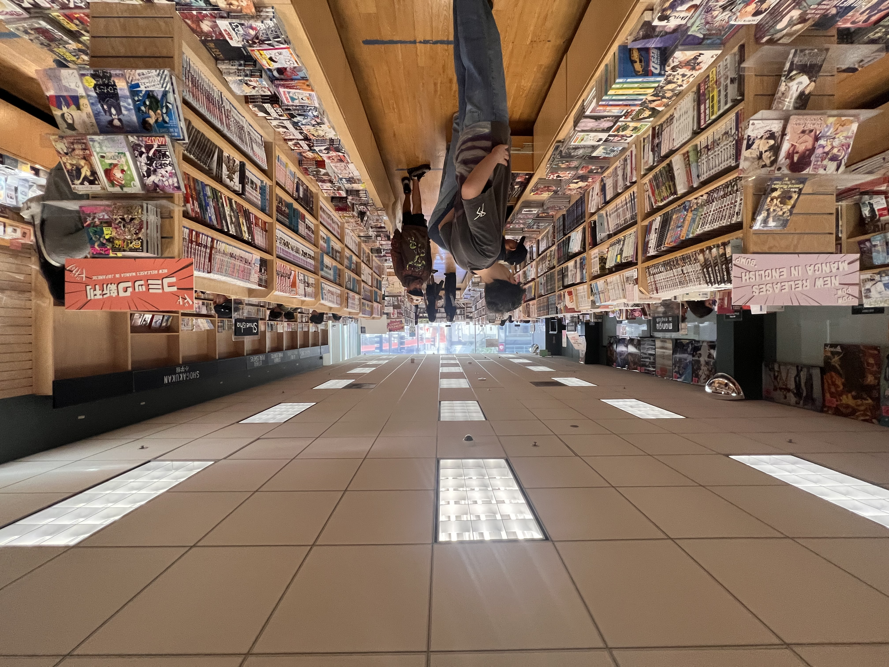
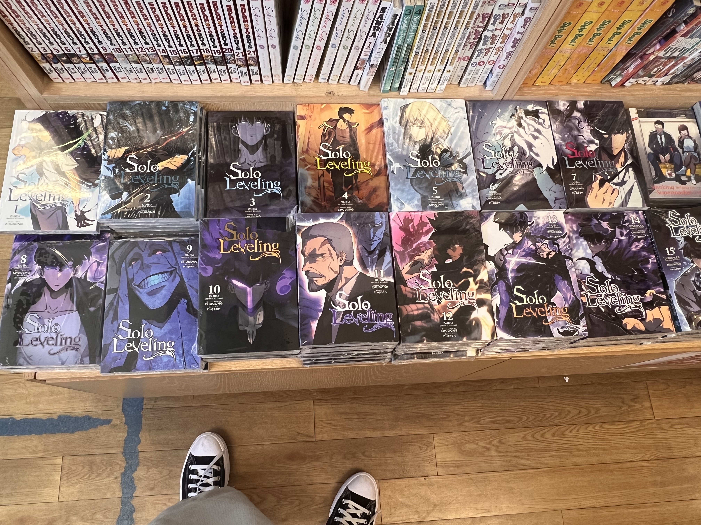

Store Review · Kinokuniya
Exploring Kinokuniya in San Francisco

Right in the center of Japantown is Kinokuniya. It is no doubt one of the best places in San Francisco to buy manga in person and it's not just any ordinary bookstore for me. It is definitely somewhere you would actually want to spend time browsing, discovering, and getting lost in the sea of shelves of manga.
Everything is sorted by genre and series, which makes it easy to move between popular titles and more niche finds. Whether you're looking for something mainstream or something harder to find, the layout makes browsing feel natural instead of overwhelming.

If you go beyond the main aisles, you'll start to notice sections that are easy to miss at first.
Art books, Japanese magazines, stationery, and smaller collections are tucked into corners that reward you for slowing down and exploring. For anyone studying near USF, this is worth the bus ride to Japantown.
What I really liked about this location is how the upstairs and downstairs are split with purpose. The upper floor has a lot of the broader bookstore energy: gifts, design, stationery, and sections that make you want to slow down and browse beyond just manga.
Then you take the stairs down and it feels like you are entering a floor dedicated to manga. That transition is honestly part of the experience — you go from general browsing to shelf-after-shelf focus, with enough depth to spend real time comparing series and hunting specific volumes.
Featured on the shelves
A few series I noticed stocked deep on my visit — good signs if you are hunting volumes in person.
One Piece
Omnibus stacks were full — easy to jump in or fill gaps.

Blue Lock
Sports-shonen energy, front-facing displays.

Solo Leveling
Popular pickup — worth checking which volumes are in stock.
Tips before you go
- Best time to visit: weekday mornings
- Prices: slightly higher for recently imported volumes
- Give yourself time to browse their catalog — you'll probably stay longer than expected